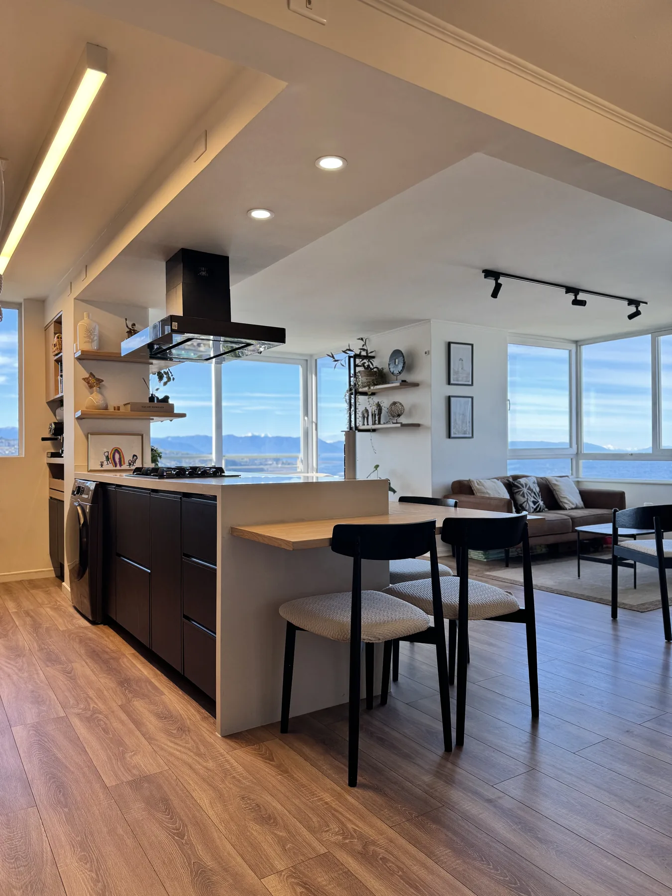
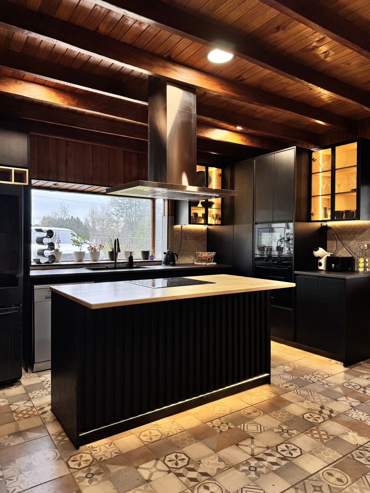
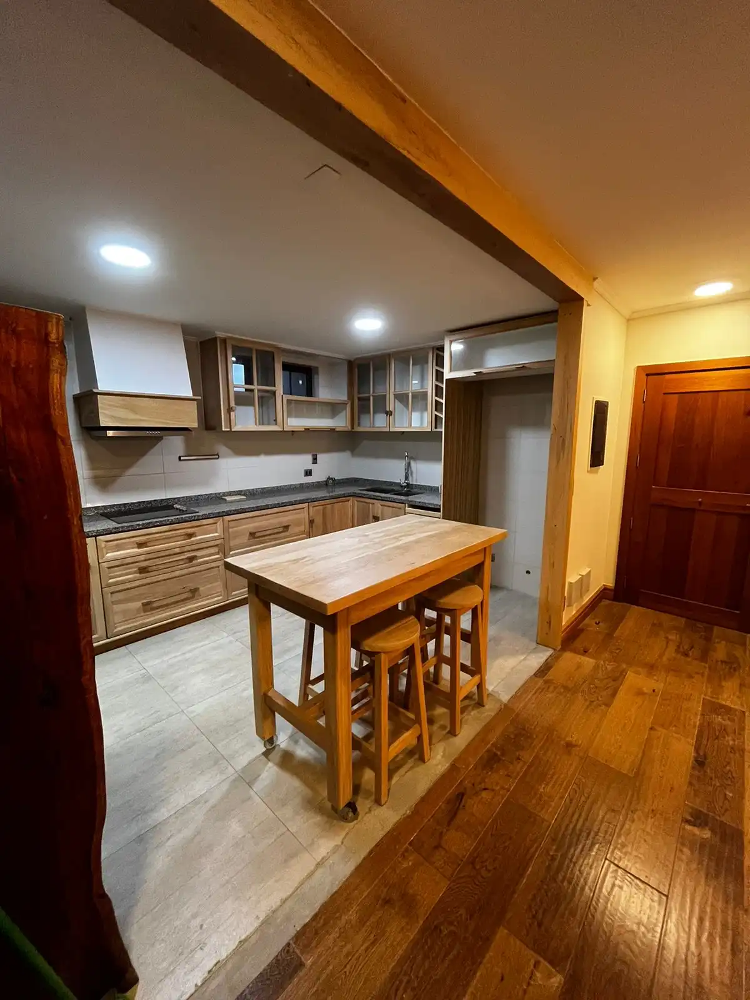
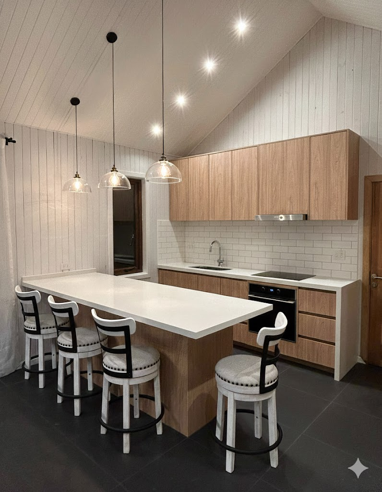
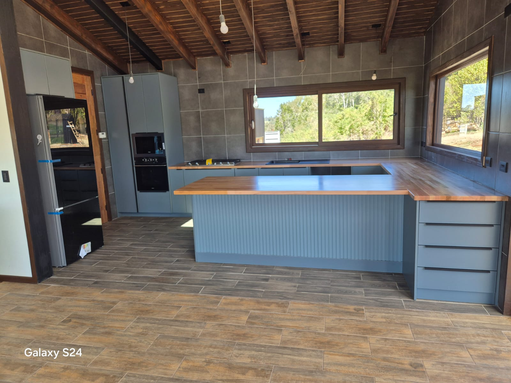
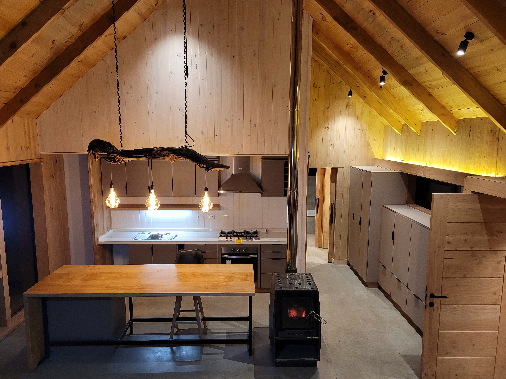
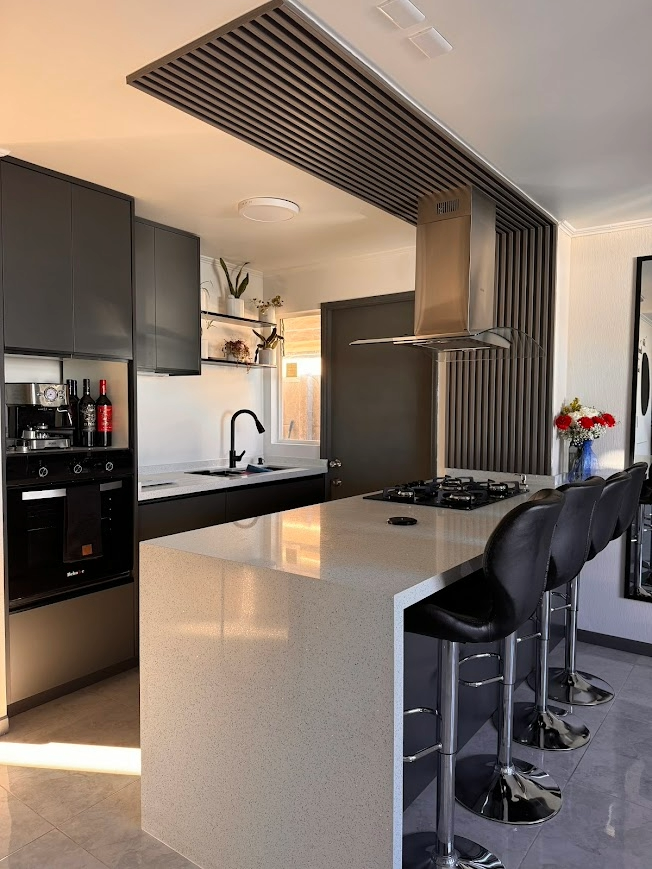
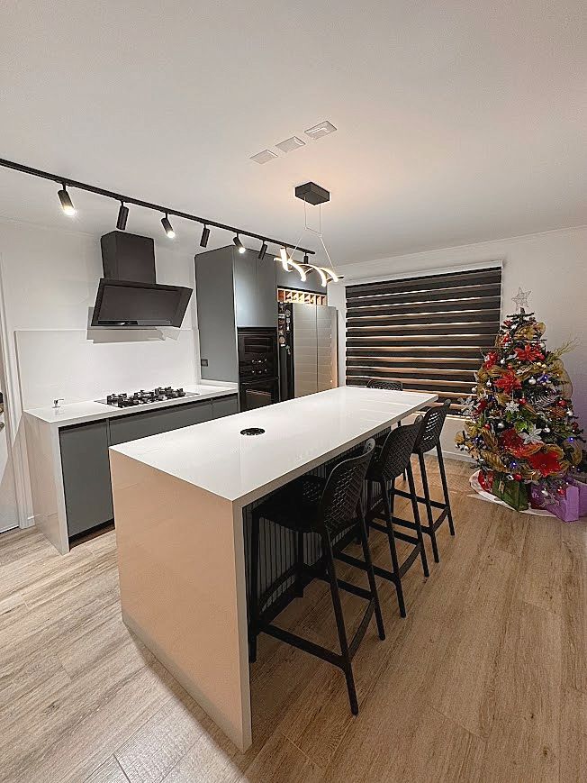

Puerto Montt
Cocina Edificio Puerto Montt
Proyecto a medida con isla central, iluminación integrada y soluciones de almacenamiento.
Ver más →Diseñamos, fabricamos e instalamos cocinas a medida para hogares de Puerto Montt y la Región de Los Lagos, con soluciones de almacenamiento, distribución e integración de mobiliario.
En nuestro portafolio puedes revisar proyectos reales en Puerto Montt, Puerto Varas, Frutillar, Alerce y Los Muermos. Cada cocina se desarrolla según el espacio disponible, la forma de uso y las necesidades de almacenamiento del hogar.
También puedes conocer nuestros servicios de muebles a medida en Puerto Montt y remodelaciones en la Región de Los Lagos.

Proyecto a medida con isla central, iluminación integrada y soluciones de almacenamiento.
Ver más →
Diseño contemporáneo con isla, vitrina iluminada y electrodomésticos integrados.
Ver más →
Diseño moderno y optimización máxima de espacios para departamento.
Ver más →
Renovación integral priorizando almacenamiento vertical.
Ver más →
Inspiración clásica con tonos blancos y madera de mañío.
Ver más →
Diseño rústico moderno adaptado al entorno campestre.
Ver más →
Concepto abierto con isla central y elegancia minimalista.
Ver más →
Nuevos avances y detalles complementarios para esta cocina de concepto abierto.
Ver más →
Renovación funcional con optimización de espacios y estética moderna.
Ver más →
Diseño moderno con línea Infinity y acabados de alta gama.
Ver más →